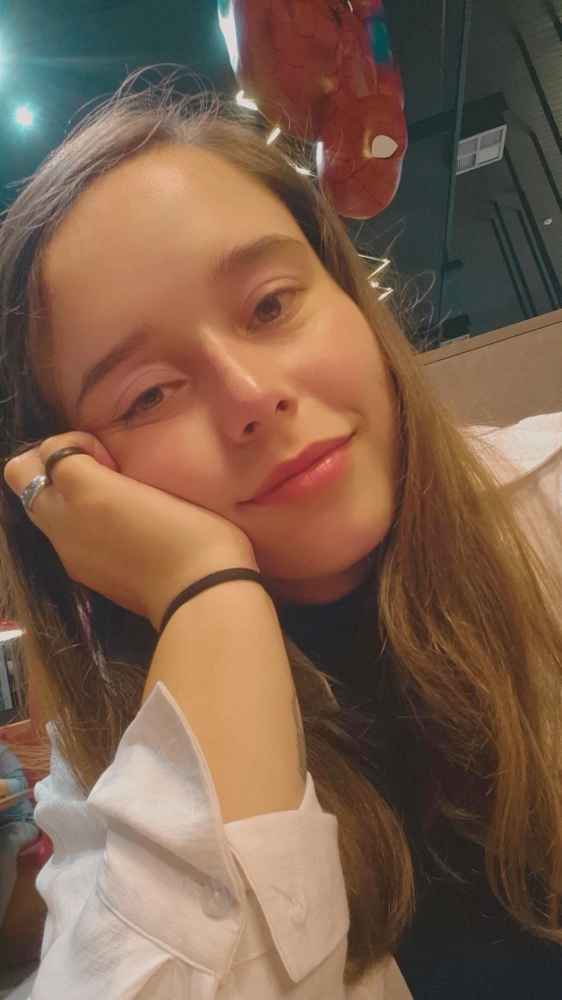

"Dedico esta obra a todos que, em meio ao barulho do mundo, escolheram o silêncio para finalmente conseguir ouvir a própria alma."[cite: 3]

Aos meus pássaros, Jorginho e Papinha, Gorducho e às minhas cachorras, Caramelo e Pantufa. Dedicado também à minha família e a todos que buscam a verdade[cite: 3].
Receba a versão digital completa instantaneamente no seu e-mail para ler no celular, Kindle, tablet ou computador.
Uma leitura corajosa e direta sobre as engrenagens do sistema, a solidão, os limites e os segredos que nos cercam.
Conheça os títulos dos textos que compõem esta jornada sem filtros:
O olhar sincero que enxerga a imensidão do mundo e nota as hipocrisias sem usar máscaras[cite: 5].
A importância de saber colocar limites para não carregar fardos e responsabilidades alheias[cite: 6].
Crítica sobre como o ser humano interfere na natureza e acaba colhendo as consequências[cite: 7].
A verdadeira força está em quem mantém a calma e a disciplina diante das provocações[cite: 8].
Reflexão íntima sobre encontrar nas pequenas coisas e em si mesmo o refúgio mais seguro[cite: 9].
"Não é solidão, é o meu quintal." A conquista da autonomia e da paz interior[cite: 10, 18].
Firmeza, autodefesa e a postura de quem segue o próprio caminho sem temer o julgamento[cite: 11].
Uma análise crítica e direta sobre as amarras do sistema, o custo de viver e os donos do capital[cite: 12].
Os encontros e desencontros traçados pelas voltas que o destino dá nas relações humanas.
A coragem de dar voz à verdade e quebrar o medo de se expressar diante do mundo[cite: 13].
Textos viscerais sobre a dor da saudade, a ausência e o vazio deixado por quem amamos[cite: 14].
As lições extraídas dos tropeços, a importância de se autoamar e cicatrizar as feridas[cite: 15].
Um amor profundo e proibido guardado nos detalhes dos olhares e na pureza dos sonhos[cite: 16].
O encanto pela escuridão, mistérios e a soberania de construir o próprio império[cite: 17].

Escritora e criadora de conteúdos digitais, dedica-se a expor verdades profundas, reflexões cruas e narrativas marcantes que revelam o que o mundo tenta esconder.
"Nas sombras da mente é onde a verdadeira arte encontra a sua voz."
Garanta o acesso imediato à obra completa com valor promocional de lançamento.